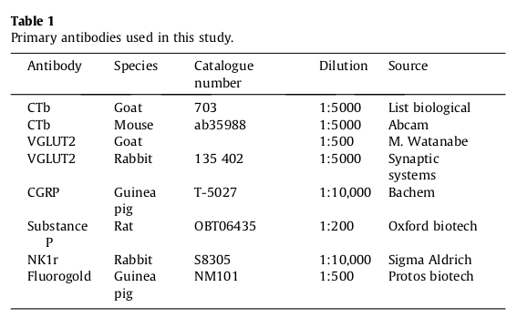

target/pdftable1/10.1016_j.pain.2014.08.023/tables/table2/table.png |
target/pdftable1/10.1179_1743132815Y.0000000036/tables/table2/table.svg.html |
|

target/pdftable1/10.1016_j.pain.2014.08.023/tables/table1/table.png |
target/pdftable1/10.1179_1743132815Y.0000000036/tables/table1/table.svg.html |
|
target/pdftable1/10.1016_j.pain.2014.08.023/tables/table2/table.png |
target/pdftable1/10.1179_1743132815Y.0000000036/tables/table2/table.svg.html |

target/pdftable1/10.1016_j.pain.2014.08.023/tables/table3/table.png |
target/pdftable1/10.1179_1743132815Y.0000000036/tables/table3/table.svg.html |

target/pdftable1/10.1016_j.pain.2014.08.023/tables/table4/table.png |
target/pdftable1/10.1179_1743132815Y.0000000036/tables/table4/table.svg.html |